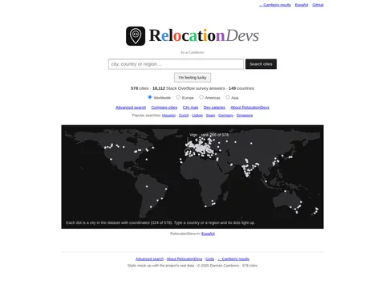
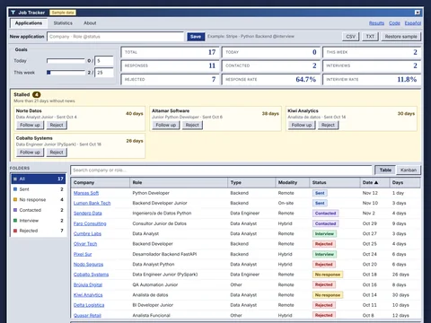
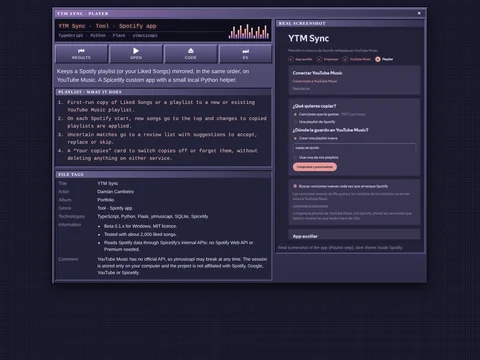

Decision-support platform for tech professionals choosing a city abroad: it combines expected salary, cost of living, taxes and the job market. ... Python, pandas, NumPy, scikit-learn, Streamlit, Plotly, Folium
udamian.github.io/en/p/relocationdevs/ - 18k - Repository - Similar pages

Personal job-application tracker with statistics: response rates and a hiring funnel. ... Python, FastAPI, PostgreSQL, SQLAlchemy, Pydantic, Pandas, Docker, pytest
udamian.github.io/en/p/job-tracker/ - 15k - Repository - Similar pages

Keeps a Spotify playlist (or your Liked Songs) mirrored, in the same order, on YouTube Music. A Spicetify custom app with a small local Python helper. ... TypeScript, Python, Flask, ytmusicapi, SQLite, Spicetify
udamian.github.io/en/p/ytm-sync/ - 6k - Repository - Similar pages